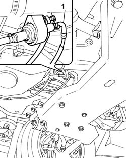

5020M34 FUEL DELIVERY PIPE TO SUPPLEMENTARY INDEPENDENT HEATER PUMP - R R
- Path
- Procedures > 50 AUXILIARY UNITS > 5020 HEATER > 5020M SUPPLEMENTARY INDEPENDENT HEATER > 5020M34 FUEL DELIVERY PIPE TO SUPPLEMENTARY INDEPENDENT HEATER PUMP - R R
- Kind
- repair procedure (removal / refitting; the operation number is the code)
- Applies to
- all engines; all production periods
- Interactive page
- https://sloeber94.github.io/elrnDB-fDct/en/#/244001255
Applies to: all engines; all production periods
 Removing
Removing
 Refitting
Refitting- Disconnect the negative battery terminal.
- Raise the vehicle on the lift.
- Position a suitable container for collecting the fuel.
Applies to: all engines; all production periods
Op. 1040A10 FUEL TANK - R + R AND DECANT FUEL
1. Disconnect the fuel supply pipe from the fuel pump for the additional independent heater loosening the retaining band.
- Disconnect the pipe on the fuel return pipe to the tank loosening the retaining band.
- Remove the fuel supply pipe to the pump.

Applies to: all engines; all production periods
Refitting
Removing- Connect the pipe on the fuel return pipe to the tank using the retaining band.
- Connect the pump fuel supply pipe to the additional independent heater using the retaining band.
Applies to: all engines; all production periods
- Lower the vehicle on the lift.
- Connect the negative battery terminal.
Applies to: engines: 2.0 JTD 8V, 2.8 JTD 8V; all production periods
Op. 1040B62 FUEL COOLING DEVICE FOR TANK RETURN CIRCUIT - R.R.
Applies to: engines: 2.0 JTD 8V, 2.8 JTD 8V; all production periods
Op. 1040B62 FUEL COOLING DEVICE FOR TANK RETURN CIRCUIT - R.R.